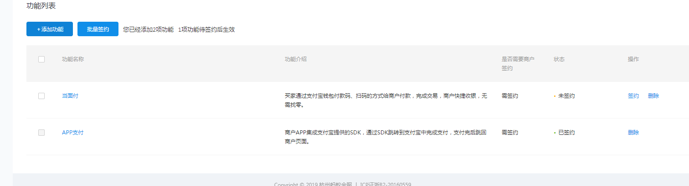
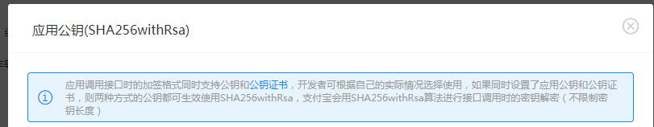

接入支付宝准备工作：（关于账号可以是个体商户也可以是企业账号但必须有营业执照）
1.登录蚂蚁金服开放平台 2.创建应用，应用分类网页应用和移动应用。应用提交审核审核通过后得到Appid才能调用相应的接口权限
3.添加功能：一般有扫码付，电脑网站支付，手机网站支付，APP支付。看你的需求什么。移动应用选择APP支付或者是扫码付，而网页应用分为移动端和PC端。
4.商户签约 需要提交相关的资料 一般是要求你提供你的网站地址和APP包等要求 按照支付宝要求来签约相关的支付功能

5.配置你的应用开发配置 （非常关键一旦配置错误则调不起支付宝支付）
a.支付宝网关 支付宝已经填写好了不动
b.应用网关 这里填的是你的后台系统的域名如https://www.ios.events.com必须能够访问
c.授权回调地址 是获取用户预授权时使用的回调地址 照此要求填写就可以没有固定的
d.加签方式一般推荐RSA(SHA256) 这里关键点来了 首先通过https://docs.open.alipay.com/291/105971这个链接下载Windows系统下载window的生成商户应用公钥和商户应用私钥一定要是匹配的
然后复制到这里那么支付宝公钥会自动生成。请保存在文本中
6.这样应用配置完成 当然如果你想测试使用沙箱进行测试则还需要配置沙箱环境当然和线上的是一样只不过支付宝网关是https://openapi.alipaydev.com/gateway.do但如果是APP支付除非是IOS,安卓语言支付则沙箱环境是没有用的
签约完成就添加功能，应用配置完成则开始进行前后台的支付功能模块的开发了
后台开发
1.先配置好你的后台支付宝支付环境 并且如果你是使用官方SDK的话最好将其SDK放在扩展类库下面
'Alipay' => [
//线上app_id
'app_id' => "2016092300576028",
//线上应用私钥
'merchant_private_key' => "en4wG3L",
//线上异步通知地址
'notify_url' => "https://www.ios.events.com/index.php/Order/notify",
//线上同步通知地址
'return_url' => "https://www.ios.events.com/index.php/Order/return_url",
//编码格式
'charset' => "UTF-8",
//签名方式
'sign_type'=>"RSA2",
//线上支付宝网关
'gatewayUrl' => "https://openapi.alipay.com/gateway.do",
//沙箱支付宝网关
//'gatewayUrl' => "https://openapi.alipaydev.com/gateway.do",
//线上支付宝公钥
'alipay_public_key' => "",
//应用公钥
'wap_public_key' => "",
]2.下载蚂蚁金服开放平台的PHP支付SDK TP框架引入SDK重要的文件放在ThinkPHP/Library/Vendor/Alipay_wap 公共类库Vendor下
将你所需要的文件改成.class.php 因为我们需要引入并且将他们当成类来使用并且他们的命名空间是Vendor/Alipay_wap
上面2步好了以后,支付环境已经搭建好了。这里进入实际开发希望不懂的可以参照开放文档。我也是一边看着开发文档(不得不说支付宝开发文档很详细)一边开发
3.(手机网站支付)步骤一般是前台先创建好订单传给下一个支付页面(上面有支付宝或者是微信支付类型和金额当然还有其他的东西) 点击支付按钮调用后台写好的支付接口比如Pay
1. 调用支付宝支付单接口
$config = C("Alipay");//支付宝接口配置数据
if (!empty($_POST['WIDout_trade_no']) && trim($_POST['WIDout_trade_no']) != "") {
//商户订单号，商户网站订单系统中唯一订单号，必填
$out_trade_no = $_POST['WIDout_trade_no'];
//订单名称，必填
$subject = $_POST['WIDsubject'];
//付款金额，必填
$total_amount = $_POST['WIDtotal_amount'];
//商品描述，可空
$body = $_POST['WIDbody'];
//超时时间
$timeout_express = "9m";
$payRequestBuilder = new AlipayWapPay();
$payRequestBuilder->setBody($body);
$payRequestBuilder->setSubject($subject);
$payRequestBuilder->setOutTradeNo($out_trade_no);
$payRequestBuilder->setTotalAmount($total_amount);
$payRequestBuilder->setTimeExpress($timeout_express);
$payResponse = new AlipayService($config);
$result=$payResponse->wapPay($payRequestBuilder,$config['return_url'],$config['notify_url']);
}当然你可以加入自己的不必要填写的参数进去(这我就管不着了)
4.调起支付后支付结果会通过异步的方式发送支付结果通知给我们也被称为异步通知
$time = time();
$orderModel = M('order');
$config = C("Alipay");//支付宝接口配置数据
$arr=$_POST;
/* 实际验证过程建议商户添加以下校验。
1、商户需要验证该通知数据中的out_trade_no是否为商户系统中创建的订单号，
2、判断total_amount是否确实为该订单的实际金额（即商户订单创建时的金额），
3、校验通知中的seller_id（或者seller_email) 是否为out_trade_no这笔单据的对应的操作方（有的时候，一个商户可能有多个seller_id/seller_email）
4、验证app_id是否为该商户本身。
*/
//验签过程
$alipaySevice = new AlipayService($config);
$alipaySevice->writeLog(var_export($_POST,true));
$result = $alipaySevice->check($arr);
if($result) {//验证成功
//进行校验
if($arr){
$ordersn = $_POST['out_trade_no'];//订单号
$total_amount = $_POST['total_amount'];//订单总金额
$app_id = $_POST['app_id'];//应用id
$data = M('weiz_order')->where('ordersn='.$ordersn)->find();
if(empty($data)||$total_amount!==$data['total']||$app_id!==$config['app_id']){
return false;
}
}else{
return false;
}
if($_POST['trade_status'] == 'TRADE_SUCCESS') {
$orderModel->startTrans();//事务开始
if(!empty($ordersn)){
$data['paytime'] = $time;//支付时间
$data['payment'] = 2;
$data['paystatus'] = 1;
$res=$orderModel->where('ordersn='.$ordersn)->save($data);
$orderData = M('order')->where('ordersn='.$ordersn)->find();
$orderId = $orderData['id'];这里就不上传代码这个是百度的代码
步骤是:先接受支付宝异步通知返回参数 ， 对于返回的签名进行验证签名如果错误则不进行下去，后如果支付成功则验证订单号是否和我们数据库中生成的
订单号是否一致，订单金额是否一致，app_id是否一致。如果都一致就要去修改订单的支付状态 判断是否已经修改过了则不予处理，如果没有 就要进行数据库的
事务处理如果不行就要回滚。修改成功则进行提交事务 别忘了最重要的一步echo success 不然支付宝每隔一段时间就会一直发送异步通知。
当然可能会出现一些极端情况如果异步通知没有修改订单支付状态成功或者异步通知没有接受到咋办但用户支付成功，用户支付失败就不用管了。
这种就要通过我们数据库中字段来记录我们的异步通知中支付宝交易流水号了 。 通过交易流水号来查询订单是否支付成功如果支付成功那就自己再次
修改订单支付状态了。
当然异步通知我们如果收不到的话(这种意外很少发送但是会发生)，所以同步通知就很重要了
5.同步通知 首先拿到我们后台系统的订单号后面判断这个支付状态是否是未支付的状态如果不是则退出程序 如果是则修改订单支付状态即可。
好了手机网站支付PHP版接结束了 这里是记录我的个人分享和体会吧 一起努力吧！